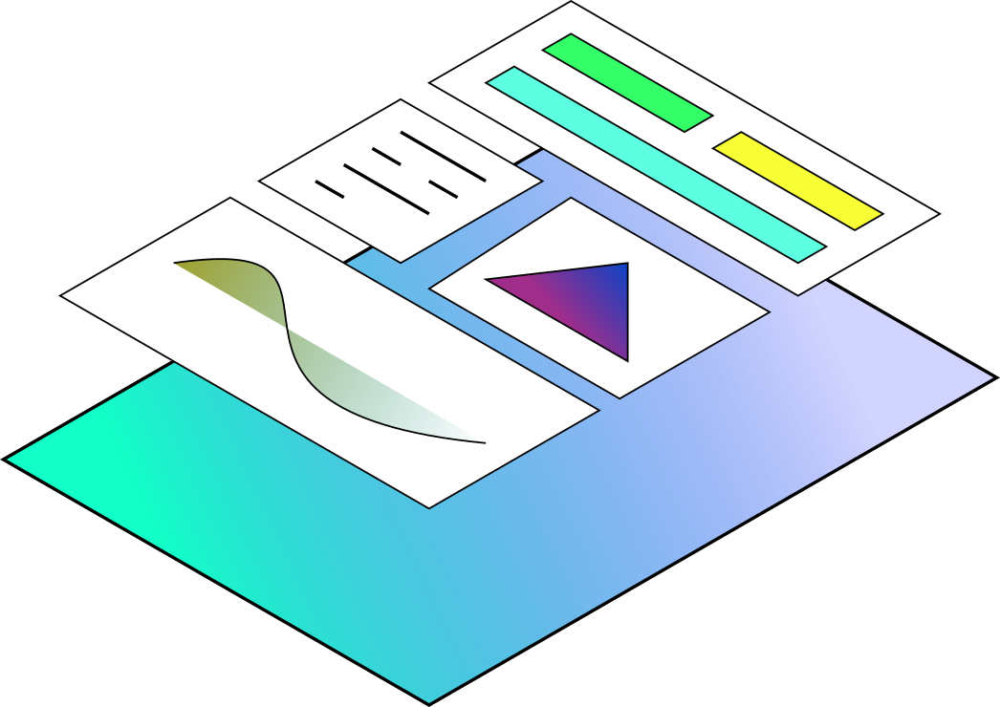
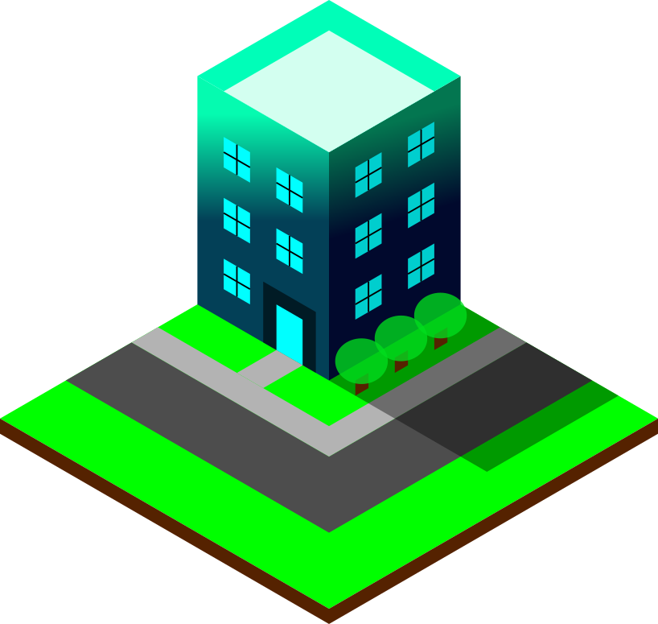

Engineering
Application Development
Through my experience and knowledge of software development I am able to build computer based, web-based, and mobile applications. The languages and technologies vary based on clients needs and scope of project.
Graphic Design, UI, & UX
Engineering

As a designer of graphic designs, user interfaces, and user experiences I am able to bring clients graphical user interfaces that not only allow data and behavior of the software to be read clearly, but also for users to use the software intuitively. I am also able to create 2d and 3d art that clearly expresses clients as a brand.
Business Admin., e-marketing, & Advertising
As a business administration minor, I am able to succesfully manage teams, keep track of common business procedures, run marketing and advertising campaigns, and increase a clients presence both online and offline.
IT Solutions & Networking
Data networking and security are important to me in every project I am involved in. As a computer science major and software developer it is important that the information, systems, and tools companies use not only be secure, but also work well together.